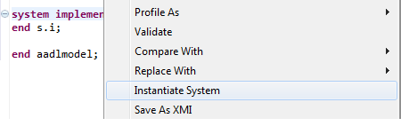
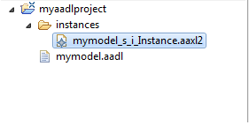

Once you have written your AADL model, you may want to instantitate it in order to analyze your system or just check model correctness. The instance model represents the architecture from its root component. The root component is a system component, the top-most component in the hierarchy. It contains all system sub-components.
To create the system instance, you need to select the system component being the root component of the instance model and create the system instance. To do so, select the text declaration of your system, open the contextual menu (right click) and select the menu item Instantiate system as shown in the following picture.
Then, a new directory named instances is created in your project. It contains all instance models. If you open it, a new file having the .aaxl is created, representing the instance model, as shown in the following picture.
You now have a complete instantiated system ! You may want to analyze your system using OSATE plug-ins, use third-party tools or try other tools listed on the AADL wiki.